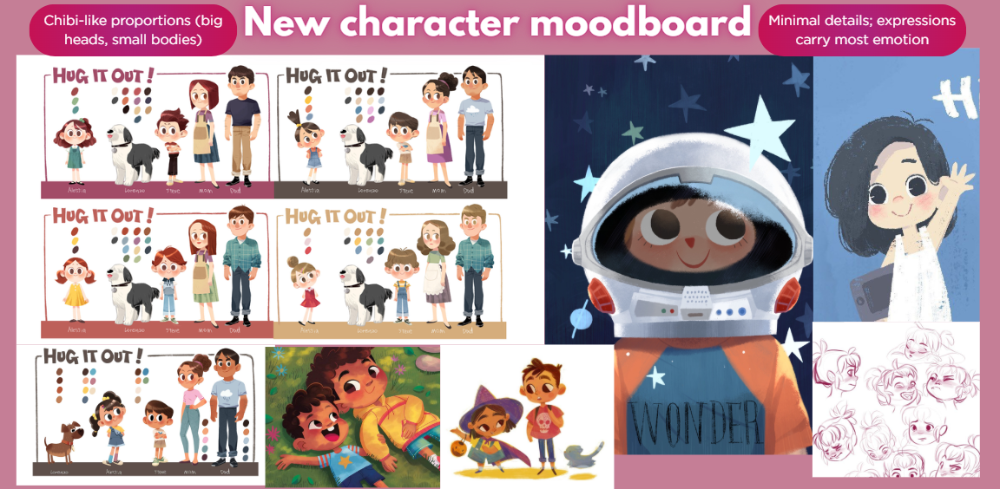
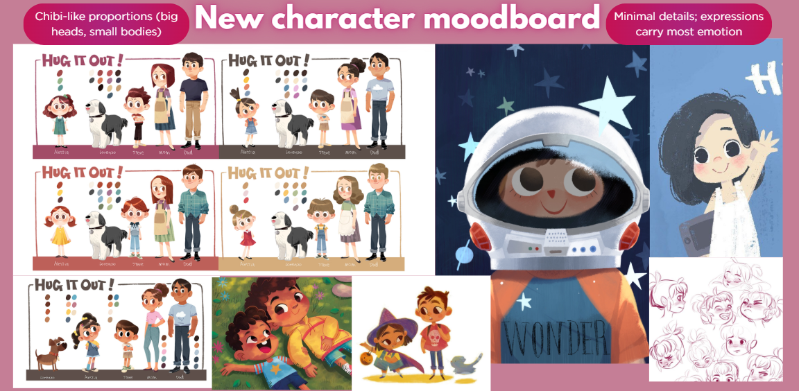

An interactive gamified storytelling experience that invites viewers to walk through a mother’s daily routine and rediscover self-care, guided by her son’s simple acts of love.

Created as part of a Digital Media studio project in collaboration with Unilever Vietnam.
The project received First Prize in the course competition for its storytelling, emotional resonance, and brand alignment.
"Glow Up Again, Mom!" reimagines self-care through a narrative-driven infographic that highlights how busy moms prioritize family over themselves. Viewers follow a mom's day and engage in interactive tasks that promote balance.
By integrating Unilever’s care-focused products, the project underscores the role of empathy and daily rituals in restoring emotional well-being.
The tone and visuals reflect a warm, family-centered atmosphere with soft, comforting colors, and a touch of playfulness.
My contribution:
Early brainstorming & narrative development
Moodboards & visual research
Rough sketches & concept illustrations for interface elements
Vectorized visual assets & key scenes
Presentation slides & Final documentation
 


 Team: Fhuong Fham, Minh Vy, Mai Han, Hai Anh, Huynh Nhi, Stacy Pham
Team: Fhuong Fham, Minh Vy, Mai Han, Hai Anh, Huynh Nhi, Stacy Pham Supervised by Ms. Vy Anh Vu, in collaboration with Unilever Vietnam
Glow Up Again, Mom
- Figma
- Interactive design
- Illustrator
